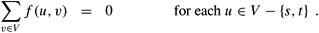

|
|
< Day Day Up > |
|
Although we shall focus on the simplex algorithm in this chapter, it is also important to be able to recognize when a problem can be formulated as a linear program. Once a problem is formulated as a polynomial-sized linear program, it can be solved in polynomial time by the ellipsoid or interior-point algorithms. Several linear-programming software packages can solve problems efficiently, so that once the problem has been expressed as a linear program, it can be solved in practice by such a package.
We shall look at several concrete examples of linear-programming problems. We start with two problems that we have already studied: the single-source shortest-paths problem (see Chapter 24) and the maximum-flow problem (see Chapter 26). We then describe the minimum-cost-flow problem. There is a polynomial-time algorithm that is not based on linear programming for the minimum-cost-flow problem, but we shall not examine it. Finally, we describe the multicommodity-flow problem, for which the only known polynomial-time algorithm is based on linear programming.
The single-source shortest-paths problem, described in Chapter 24, can be formulated as a linear program. In this section, we shall focus on the formulation of the single-pair shortest-path problem, leaving the extension to the more general single-source shortest-paths problem as Exercise 29.2-3.
In the single-pair shortest-path problem, we are given a weighted, directed graph G = (V, E), with weight function w : E → R mapping edges to real-valued weights, a source vertex s, and a destination vertex t. We wish to compute the value d[t], which is the weight of a shortest path from s to t. To express this problem as a linear program, we need to determine a set of variables and constraints that define when we have a shortest path from s to t. Fortunately, the Bellman-Ford algorithm does exactly this. When the Bellman-Ford algorithm terminates, it has computed, for each vertex v, a value d[v] such that for each edge (u, v) ∈ E, we have d[v] ≤ d[u] + w(u, v). The source vertex initially receives a value d[s] = 0, which is never changed. Thus we obtain the following linear program to compute the shortest-path weight from s to t:
| (29.44) |
subject to
| (29.45) |
| (29.46) |
In this linear program, there are |V | variables d[v], one for each vertex v ∈ V . There are |E| + 1 constraints, one for each edge plus the additional constraint that the source vertex always has the value 0.
The maximum-flow problem can also be expressed as a linear program. Recall that we are given a directed graph G = (V, E) in which each edge (u, v) ∈ E has a nonnegative capacity c(u, v) ≥ 0, and two distinguished vertices, a sink s and a source t. As defined in Section 26.1, a flow is a real-valued function f : V × V → R that satisfies three properties: capacity constraints, skew symmetry, and flow conservation. A maximum flow is a flow that satisfies these constraints and maximizes the flow value, which is the total flow coming out of the source. A flow, therefore, satisfies linear constraints, and the value of a flow is a linear function. Recalling also that we assume that c(u, v) = 0 if (u, v) ∉ E, we can express the maximum-flow problem as a linear program:
| (29.47) |
subject to
| (29.48) |
| (29.49) |
| (29.50) |  |
This linear program has |V|2 variables, corresponding to the flow between each pair of vertices, and it has 2|V|2 + |V| - 2 constraints.
It is usually more efficient to solve a smaller-sized linear program. The linear program in (29.47)-(29.50) has, for ease of notation, a flow and capacity of 0 for each pair of vertices u, v with (u, v) ∉ E. It would be more efficient to rewrite the linear program so that it has O(V + E) constraints. Exercise 29.2-5 asks you to do so.
In this section, we have used linear programming to solve problems for which we already knew efficient algorithms. In fact, an efficient algorithm designed specifically for a problem, such as Dijkstra's algorithm for the single-source shortest-paths problem, or the push-relabel method for maximum flow, will often be more efficient than linear programming, both in theory and in practice.
The real power of linear programming comes from the ability to solve new problems. Recall the problem faced by the politician in the beginning of this chapter. The problem of obtaining a sufficient number of votes, while not spending too much money, is not solved by any of the algorithms that we have studied in this book, yet it is solved by linear programming. Books abound with such real-world problems that linear programming can solve. Linear programming is also particularly useful for solving variants of problems for which we may not already know of an efficient algorithm.
Consider, for example, the following generalization of the maximum-flow problem. Suppose that each edge (u, v) has, in addition to a capacity c(u, v), a real-valued cost a(u, v). If we send f (u, v) units of flow over edge (u, v), we incur a cost of a(u, v) f (u, v). We are also given a flow target d. We wish to send d units of flow from s to t in such a way that the total cost incurred by the flow, Σ(u, v)∈E a(u, v)f(u v), is minimized. This problem is known as the minimum-cost-flow problem.
Figure 29.3(a) shows an example of the minimum-cost-flow problem. We wish to send 4 units of flow from s to t, while incurring the minimum total cost. Any particular legal flow, that is, a function f satisfying constraints (29.48)-(29.50), incurs a total cost of Σ(u, v)∈E a(u, v) f (u, v). We wish to find the particular 4-unit flow that minimizes this cost. An optimal solution is given in Figure 29.3(b), and it has total cost Σ(u, v)∈E a(u, v) f (u, v) = (2·2)+(5·2)+(3·1)+(7·1)+(1·3) = 27.
There are polynomial-time algorithms specifically designed for the minimum-cost-flow problem, but they are beyond the scope of this book. We can, however, express the minimum-cost-flow problem as a linear program. The linear program looks similar to the one for the maximum-flow problem with the additional constraint that the value of the flow be exactly d units, and with the new objective function of minimizing the cost:
| (29.51) |
subject to
| (29.52) |
| (29.53) |
| (29.54) |
| (29.55) |
As a final example, we consider another flow problem. Suppose that the Lucky Puck company from Section 26.1 decides to diversify its product line and ship not only hockey pucks, but also hockey sticks and hockey helmets. Each piece of equipment is manufactured in its own factory, has its own warehouse, and must be shipped, each day, from factory to warehouse. The sticks are manufactured in Vancouver and must be shipped to Saskatoon, and the helmets are manufactured in Edmonton and must be shipped to Regina. The capacity of the shipping network does not change, however, and the different items, or commodities, must share the same network.
This example is an instance of a multicommodity-flow problem. In this problem, we are again given a directed graph G = (V, E) in which each edge (u, v) ∈ E has a nonnegative capacity c(u, v) ≥ 0. As in the maximum-flow problem, we implicitly assume that c(u, v) = 0 for (u, v) ∉ E. In addition, we are given k different commodities, K1, K2, ..., Kk, where commodity i is specified by the triple Ki = (si, ti, di). Here, si is the source of commodity i, ti is the sink of commodity i, and di is the demand, which is the desired flow value for commodity i from si to ti. We define a flow for commodity i, denoted by fi, (so that fi(u, v) is the flow of commodity i from vertex u to vertex v) to be a real-valued function that satisfies the flow-conservation, skew-symmetry, and capacity constraints. We now define f (u, v), the aggregate flow, to be sum of the various commodity flows, so that . The aggregate flow on edge (u, v) must be no more than the capacity of edge (u, v). This constraint subsumes the capacity constraints for the individual commodities. The way this problem is described, there is nothing to minimize; we need only determine whether it is possible to find such a flow. Thus, we write a linear program with a "null" objective function:
The only known polynomial-time algorithm for this problem is to express it as a linear program and then solve with a polynomial-time linear-programming algorithm.
Put the single-pair shortest-path linear program from (29.44)-(29.46) into standard form.
Write out explicitly the linear program corresponding to finding the shortest path from node s to node y in Figure 24.2(a).
In the single-source shortest-paths problem, we want to find the shortest-path weights from a source vertex s to all vertices v ∈ V. Given a graph G, write a linear program for which the solution has the property that d[v] is the shortest-path weight from s to v for each vertex v ∈ V.
Write out explicitly the linear program corresponding to finding the maximum flow in Figure 26.1(a).
Rewrite the linear program for maximum flow (29.47)-(29.50) so that it uses only O(V + E) constraints.
Write a linear program that, given a bipartite graph G = (V, E), solves the maximum-bipartite-matching problem.
In the minimum-cost multicommodity-flow problem, we are given directed graph G = (V, E) in which each edge (u, v) ∈ E has a nonnegative capacity c(u, v) ≥ = 0 and a cost a(u, v). As in the multicommodity-flow problem, we are given k different commodities, K1, K2, ..., Kk, where commodity i is specified by the triple Ki = (si, ti, di). We define the flow fi for commodity i and the aggregate flow f (u, v) on edge (u, v) as in the multicommodity-flow problem. A feasible flow is one in which the aggregate flow on each edge (u, v) is no more than the capacity of edge (u, v). The cost of a flow is Σu, v∈V a(u, v) f(u, v), and the goal is to find the feasible flow of minimum cost. Express this problem as a linear program.
|
|
< Day Day Up > |
|